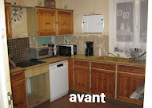
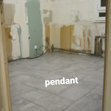
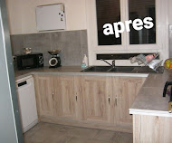
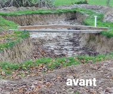
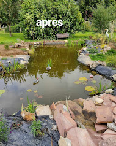
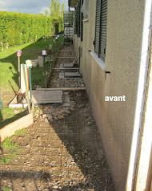
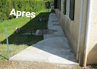
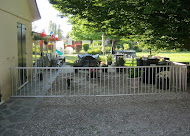
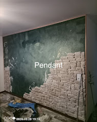
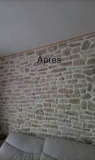

Mes services
Petits travaux
Montage et installation
- Montage de meubles
- Montage de lits et lits superposés
- Installation d'étagères
- Pose de tringles à rideaux
- Fixation miroirs et cadres
Exemple : cuisine (avant / pendant / après)



Fixation et bricolage intérieur
- Fixation TV murale
- Pose de supports
- Accrochage d’objets
- Installation barre de soutien
- Ajustement de meubles
Petites réparations
- Réparation portes / poignées
- Réparation meubles
- Remplacement charnières
- Réglage portes (grincements / frottements)
- Réparation tiroirs
Plomberie légère
- Remplacement robinet
- Chasse d’eau
- Joints
- Petites fuites
- Débouchage
Petits travaux divers
- Pose luminaires / ampoules
- Pose équipements domestiques
- Petite électricité simple
- Pose placo, parquet, lino
- Peinture / papier peint / fausses pierres
Jardinage et travaux extérieurs
Entretien jardin
- Tonte de pelouse
- Désherbage
- Ramassage feuilles
- Arrosage
Exemples travaux extérieurs







📍 Zone d’intervention